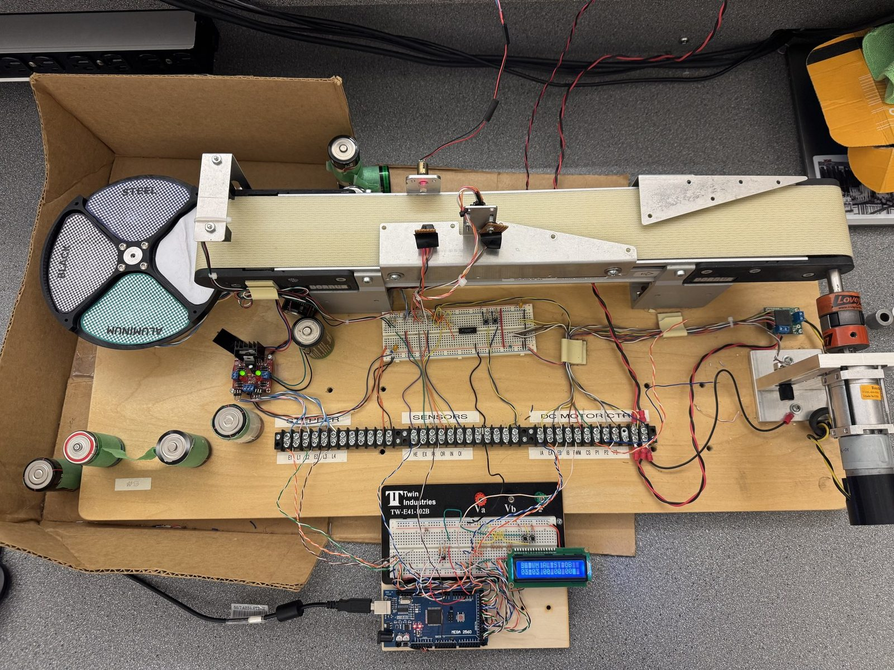
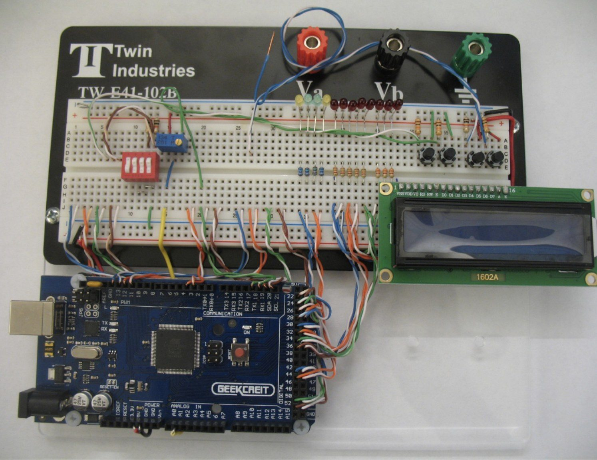
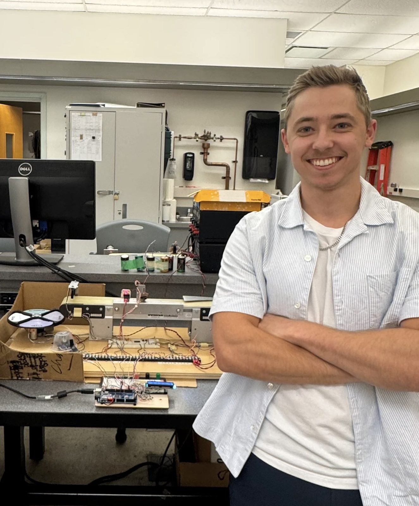

Detection and Sorting System
 detection-sorting/own-02.jpg
detection-sorting/own-02.jpgAn automated conveyor system that sorts 48 blocks across four material types (aluminum, steel, white plastic, and black plastic) in a single continuous operation. The blocks are dimensionally identical, so classification rests entirely on surface reflectivity, measured by an optical sensor as each piece crosses a sampling window.
| Throughput | 48 blocks, 4 material types, one continuous run |
|---|---|
| Best time | 29.7 s, zero errors (target 60 s) |
| Controller | ATmega2560, bare-metal C |
| Conveyor | 53% PWM duty cycle |
| Stepper profile | Trapezoidal acceleration |
Firmware architecture
An ATmega2560 running bare-metal C manages ADC sampling, material classification, conveyor PWM control, stepper positioning, and the LCD display. The architecture is interrupt-driven: time-critical sensing lives in interrupt service routines, while classification, queue management, and display updates happen in the main loop.
The optimisation that mattered
Restructuring the ADC sampling path so that each completed conversion re-triggers the next from inside the ADC interrupt itself, rather than returning to the main loop first, enabled near-continuous sampling while tracking only the minimum reflectivity value. That eliminated the primary failure mode, which was merging two closely-spaced pieces into one reading.
Tuning the mechanics
The conveyor runs at 53% duty cycle, intentionally reduced from 60%, because momentum was carrying pieces past the tray faster than it could rotate. The stepper turned out to be the real bottleneck; a trapezoidal acceleration profile replaced an aggressive S-curve for reliability under load.
Result
Best run completed in 29.7 seconds with zero errors, against a 60-second target. Additional features include a pause mode that displays live material counts and a ramp-down mode for graceful shutdown.
Build log
5 images
detection-sorting/own-04.jpg
detection-sorting/own-03.jpg
detection-sorting/own-01.jpg detection-sorting/05.png
detection-sorting/05.png detection-sorting/06.png
detection-sorting/06.pngContact
Open to co-op and new-grad roles in robotics, aerospace, and advanced manufacturing.